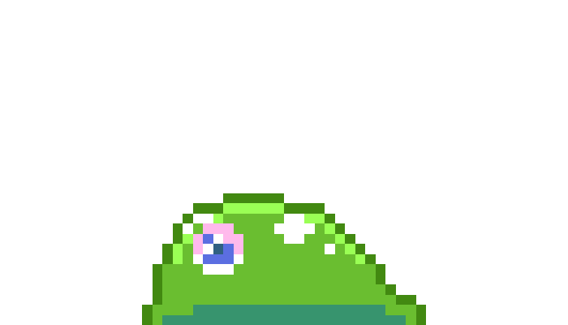

Wrath of the dungeon master:
 a rougelike videogame programmed in unity
a videogame where in i did most of the programming in unity where the
player plays as a slime. This sliem gains the ability to take on various
forms based on the classes of dungeons and dragons. The slime fights
through randomly generated maps to get out of a dungeon while being
harrased by the dungeon master.